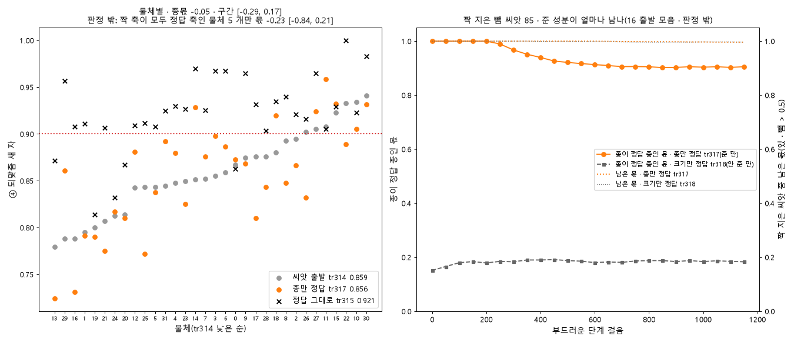

실험 m2_tr0317_h070_종만
목표 G1.2 view 모음 → 파츠별 CAD code(CadQuery · 그 전 「3 면도 → 파츠별 CAD」 · 지금 M2 는 위 · 앞 · 옆 고정 세 장만 받음 → 아무 각도 N 장으로 바꿀 것 · 11-20) · G1 첫 제품 — 피규어 · 메카 사진 여러 장 + 치수 → 숨은선 3 면도 + 파츠별 CAD · G0 임의의 이미지 → CAD 코드 · 빌린 가정 5: 정사영 · 시점앎 · 흰바탕 · 렌더화풍 · 정답3D · 갚는 계획: 진단 · 정답 만들기 — 껍데기를 그릴 어휘가 정해지면 그 어휘로 CAD code 정답 변환(m2 학습 · 비교는 그 뒤 카드) · 목표 시험지 값: 안 잼 (!)
tr315 의 ④ 오름(0.8588 → 0.9214)은 주로 뺌 몸의 종류 덕인가 — 지금 씨앗의 종류만 정답으로 주면 그 오름의 몇 할을 되찾나?
| 가설 | 주장 | 결과 | 근거 |
|---|---|---|---|
| m2-H70 | tr315 오름은 주로 뺌 몸 종류 덕이다 — 지금 씨앗의 종류만 정답으로 주면 tr315 오름의 70 % 이상을 되찾는다 | 기각 | S6 합성 정답 32 · 뺌 씨앗 종류만 정답 ④ 되맞춤 새 자 평균 0.8555(tr314 0.8588 · tr315 0.9214 · tr316 자리만 0.8648 · 자리몫 0.10 구간 [−0.18, 0.33]) · 종몫 −0.0514(≤ 0.3 → 기각) · 종몫 구간 [−0.2908, 0.1735](위끝도 0.3 아래) · 넷차 −0.0032 구간 [−0.0167, 0.0118] · 오름 14 · 내림 18 · 물체별 차 중앙값 −0.005 · 0.9 넘은 물체 7/32(tr314 7 · 새로 넘음 14 · 18 · 떨어짐 22 · 26) · 가장 큰 오름 14 +0.0771 · 29 +0.0727 · 11 +0.0505 · 가장 큰 내림 25 −0.0714 · 26 −0.0701 · 17 −0.0661 · 최소 0.7244(물체 13) · tr315 보다 높은 물체 3(0 · 11 · 15) · 뺌 찾음 37/93(tr314 28 · tr316 34 · tr315 74) · 남은 뺌 몸 평균 2.16(tr314 2.41 · tr315 2.5 · tr316 2.59 · 32 물체 합 69 < 짝 85 → 짝 몸 일부가 부드러운 단계 뒤에 빠짐) · 하네스 실패 0 · CAD 안 끝남 0 · 조용한 실패 0 · 판 폴더 0.07 GB · 판정 밖 자취(짝 지은 씨앗 85 × 16 출발 · 부드러운 단계 50 걸음마다 · 그림317.py · 첫 기록 종 다 정답 assert): 종 argmax 가 정답 종인 몫 첫 1.0 · 끝 0.905(안 준 판 tr318 같은 짝 0.151 → 0.183) · 있 · 뺌 둘 다 0.5 넘은 몫 끝 0.996(두 판 같음) · 미리 적은 판정 밖 — 짝 85 중 씨앗 축 = 정답 축 38 · 짝 축이 모두 정답 축인 물체 5(1 · 19 · 24 · 25 · 27)만 종몫 −0.2281 구간 [−0.8388, 0.2078] · 차 −0.0126 — 넷.json 세 판 물체별 · 자취 json 에서 셈 |
결정 표(돌리기 전에 정함)
- 만약 지지
다음 종류이 주된 원인 — 입력에서 종류을 잡는 씨앗 고침 카드 - 만약 기각
다음 종류만으로는 아님 — 성분이 함께 맞아야 하는지(자리 + 꼴 · 몸 수) 다음 판 후보를 사용자와 고름 - 만약 약함
다음 섞임 — 숫자 그대로 적고 사용자와 고름
분석
한 줄로
물음: tr315 에서 뺌 몸을 정답 그대로 출발시키자 관문 ④ 가 0.8588 → 0.9214 로 올랐다. 그 오름은 주로 뺌 몸의 종류 덕인가?
답: 종류만 줘서는 오름이 나오지 않았다. 짝 지은 씨앗의 종류만 정답으로 주고 나머지는 지금 씨앗 그대로 두자 평균은 0.8555 였다. tr315 오름 가운데 되찾은 몫(종몫)은 −0.05 다. 미리 적은 규칙(≤ 0.3 이면 기각)대로 m2-H70 기각이다. 95 % 구간 [−0.29, 0.17] 의 위끝도 0.3 아래다. 준 종류는 부드러운 단계가 끝날 때까지 90 % 남아 있었다. 그러니 그 단계에서 종류가 지워져서 못 오른 것은 아니다. 종류가 필요 없다는 뜻도 아니다. 지금 씨앗의 자리 · 크기 · 축 위에서는 종류 하나만 맞아서 오르지 않는다는 뜻이다.
왜 이 실험을 했나
tr315 는 뺌 몸의 자리 · 크기 · 종류 · 축 · 몸 수를 한꺼번에 정답으로 줬다. 그래서 무엇 덕에 올랐는지 몰랐다. tr316 에서 자리만 줬더니 오름의 10 % 만 되찾았다. 정답 자리에서 출발한 뺌 몸도 부드러운 단계 끝에는 정답 가운데에서 0.216 떨어져 있었다(tr315 0.003). 그래서 꼴 쪽 성분을 하나씩 주는 판 둘을 사용자가 골랐다(감시 세션 전달). 이 판은 종류만, tr318 은 크기만 준다. 목표는 임의의 메시를 CAD code 정답으로 바꾸는 변환이다.
몇 가지 낱말을 먼저 풀어 둔다.
- ④ 는 본 판 전에 거치는 관문이다. 뺌 어휘로 직접 만든 합성 정답 32 개를 같은 맞춤으로 다시 맞춰(되맞춤) 정답을 되찾는지 본다.
- 뺌 몸 은 더한 몸에서 파내는 몸이다. 씨앗 은 입력에서 파인 곳을 찾아 뺌 몸을 처음 놓는 자리다.
- 종류 는 상자 · 원기둥 · 계단축 같은 몸의 꼴 이름이다. 축 은 몸이 선 방향이다.
- 맞춤은 물체마다 출발점 16 개(16 출발)에서 따로 돌린 뒤 가장 나은 것을 고른다. 앞 1,200 걸음은 부드러운 단계(종류와 켜짐을 부드럽게 맞춤), 뒤 150 걸음은 딱 단계(종류를 하나로 굳히고 크기 · 자리만 다듬음)다. 그 뒤 다듬기 단계(R7 · R4 · R5)가 더 있다.
- 몸마다 있(켜짐)과 뺌(빼는 몸으로 쓰임) 값이 0 ~ 1 로 있다. 둘 다 0.5 를 넘으면 그 몸이 켜진 뺌 몸이다.
- 판정 밖 은 미리 정한 판정에 쓰지 않은 곁 측정이다.
바꾼 것 하나
지금 씨앗 넷과 정답 뺌 몸 가운데를 거리로 짝지었다. 그다음 짝 지은 씨앗의 종류만 정답 종류로 정해 출발시켰다. 종류마다 점수가 있는데, 정답 종류는 +4 · 나머지는 −4 로 두어 처음부터 그 종류가 뚜렷이 고르게 했다. 가운데 · 크기 · 축 · 몸 수(넷)는 지금 씨앗 그대로다. 크기는 씨앗이 잡은 파인 점 덩이를 둘러싼 상자다. 정답 뺌 몸 93 개 중 85 개가 종류를 받았다.
축은 함께 주지 않았다. 한 판에는 성분 하나만 바꾸고, 축은 방향 정보라 자리 쪽에 가깝기 때문이다. 그래서 짝 85 개 중 47 개는 정답과 다른 축 위에 정답 종류가 놓였다(씨앗 축이 정답 축과 같은 짝은 38 개 · 결과 전에 셈). 나머지는 tr314 와 같다.
결과

왼쪽 그림을 먼저 보자. 주황(종만 정답)이 회색(씨앗 출발) 위아래로 흩어져 있다. 대부분은 검은 ×(정답 그대로)까지 못 올라간다(물체 0 · 11 · 15 만 tr315 보다 높음). 물체별 차이는 −0.07 에서 +0.08 사이다.
오른쪽 그림은 짝 지은 씨앗 85 개를 16 출발에 걸쳐 모은 부드러운 단계 자취다(판정 밖). 주황 실선은 종류가 정답 종류로 남아 있는 몫이다. 회색 파선은 같은 짝을 크기만 준 tr318 에서 같은 셈으로 잰 것이다. 점선 두 개(오른쪽 축 · 켜진 뺌 몸으로 남은 몫)는 두 판 모두 1 근처라 위 테두리에 겹쳐 있다.
| 종만 정답(이 실험) | 씨앗 출발(tr314) | 자리만 정답(tr316) | 정답 그대로(tr315) | |
|---|---|---|---|---|
| 되맞춤 새 자 평균 | 0.8555 | 0.8588 | 0.8648 | 0.9214 |
| 되찾은 몫(지지 ≥ 0.7 · 기각 ≤ 0.3) | −0.05 [−0.29, 0.17] | 0 | 0.10 [−0.18, 0.33] | 1 |
| 0.9 넘은 물체 | 7/32 | 7/32 | 9/32 | 27/32 |
| 뺌 자리 찾음 | 37/93 | 28/93 | 34/93 | 74/93 |
| 끝에 남은 뺌 몸(물체 평균) | 2.16 | 2.41 | 2.59 | 2.5 |
| 하네스 실패 | 0 | 0 | 0 | 0 |
새 자는 정답 메시와 맞춘 메시의 표면 점이 서로 0.02 안에 드는 정도를 F 점수(0 ~ 1)로 잰 값이다. 거리는 정답 메시를 둘러싼 상자의 가장 긴 변을 1 로 둔 단위다. 되찾은 몫은 (이 판 − tr314) ÷ (tr315 − tr314) 다. 구간은 32 물체를 다시 뽑아 분자와 분모를 함께 셈한 짝 부트스트랩 2,000 번의 95 % 범위다. 뺌 자리 찾음은 끝에 정답 뺌 몸 가운데 0.1 안에 뺌 몸이 있는 수다.
왜 이렇게 나왔나
확인한 것
- 종몫은 −0.0514, 95 % 구간은 [−0.2908, 0.1735] 다. 이 구간은 물체 사이 흔들림만 담는다(한 번만 돌림).
- tr314 대비 짝 차는 −0.0032, 구간은 [−0.0167, 0.0118] 이다. 구간이 0 을 품는다. 오른 물체 14, 내린 물체 18, 물체별 차 중앙값 −0.005 다. 0.9 를 새로 넘은 물체가 둘(14 · 18), 떨어진 물체가 둘(22 · 26)이다. 평균으로는 tr314 와 구분되지 않는다.
- 뺌 자리 찾음은 28 → 37/93 으로 늘었지만 평균 점수는 오르지 않았다.
- 자취(짝 지은 씨앗 85 개 × 16 출발 · 50 걸음마다 · 부드러운 단계 1,150 걸음 기록까지): 종류가 정답 종류인 몫은 첫 기록 1.0, 마지막 기록 0.905 다(종류는 가장 큰 점수 하나로 셈). 같은 짝에 종류를 안 준 tr318 은 0.151 → 0.183 이다. 켜진 뺌 몸으로 남은 몫은 두 판 모두 마지막 기록에 0.996 이다.
- 그런데 맞춤이 다 끝난 뒤 남은 뺌 몸은 물체 평균 2.16(32 물체 합 69)이다. 짝 지은 몸 85 개보다 적다. 그러니 짝 지은 몸 가운데 적어도 16 개는 부드러운 단계 뒤(딱 단계나 그 뒤 다듬기)에서 빠졌다. 어느 단계에서 빠졌는지는 자취에 없다.
- 미리 적은 판정 밖 셈: 짝 지은 씨앗이 모두 정답 축과 같은 축인 물체만 따로 보면 다섯 개(1 · 19 · 24 · 25 · 27)다. 그 다섯 개만의 몫은 −0.23, 구간은 [−0.84, 0.21] 이다. 다섯 개라 구간이 넓다. 축이 어긋나서 안 올랐다는 근거는 이 셈에서 나오지 않는다.
짐작 (아직 확인 안 함)
- 정답 종류라도 자리와 크기가 틀린 채 엉뚱한 곳을 파면, 종류가 맞는 것만으로는 표면이 정답에 가까워지지 않는 것으로 보인다.
- 자리만(tr316)도, 종류만(이 판)도 혼자서는 거의 오르지 않았다. tr315 오름은 여러 성분이 함께 맞아서 나왔을 수 있다.
- 크기만 준 tr318 은 지금 끝 단계를 돌고 있다.
한계
- 정답에서 종류를 빌린 진단이다. 실제 물체에 그대로 쓸 수 없다.
- 섞임: 축은 씨앗 그대로라 짝 47/85 는 정답과 다른 축 위의 정답 종류다. 크기는 씨앗 덩이 상자(정답과 무관)다. 짝을 고르는 데 정답 가운데를 썼다. 정답 뺌 85/93 만 받았다. 몸 수는 tr314 와 같은 넷이고 tr315 와 다르다.
- 성분끼리 서로 기대면, 성분 판마다 낸 몫을 더해 tr315 오름을 나눌 수 없다(카드 섞임 칸).
- 한 번만 돌렸다. 대조 tr314 를 지금 코드로 다시 돌리지 않아, 같은 판을 다시 돌릴 때 생기는 흔들림 크기를 재지 않았다(카드 짐작 ≈ 0.1).
- 자취는 부드러운 단계만 담는다. 딱 단계와 그 뒤 다듬기는 없다. 종류는 가장 큰 점수 하나로만 셌다.
- 자취의 「안 준 판」은 tr318 이다. 그 판은 종류 대신 크기를 줬으니 순수한 무개입 대조가 아니다. tr314 는 종류 자취를 남기지 않았다.
- tr318 과 같은 시각에 GPU 를 하나씩 나눠 돌렸다. 묶음과 출발 씨는 같다.
배운 것과 다음
지금 씨앗의 자리 · 크기 · 축 위에서 뺌 몸 종류만 정답으로 줘서는 ④ 가 오르지 않는다. 준 종류가 부드러운 단계 끝까지 남았으니, 그 단계에서 종류가 지워져서 생긴 일은 아니다.
- 크기만 준 tr318 결과(판정 00:21 무렵)와 함께 본다.
- 자리도 종류도 혼자서는 안 오르므로, 성분을 함께 주는 판(예: 자리 + 종류 + 크기 + 축, 또는 몸 수까지)이 다음 후보다. 이것은 내 제안이고 고르는 것은 사용자다.
- 바탕은 지금 쓰는 맞춤 코드(B2) 그대로 둔다.
검토 (11-27 맥락 없는 서브 에이전트 · 카드 · 잼 · 넷 세 개 · tr316 잼 · 보고 · 결과_pc.png · 그림317.py · 판정316 · 317 만 봄)
- 숫자 · 판정: 평균 · 종몫 · 두 구간(씨 0 다시 뽑음) · 오름 14 · 내림 18 · 중앙값 · 0.9 넘음 7 · 새로 넘음 14 · 18 · 떨어짐 22 · 26 · 찾음 37/93 · 축 맞은 다섯 물체 −0.23 [−0.84, 0.21] 모두 넷.json 으로 다시 세어 맞음 · 자취 1.0 → 0.905 · 0.151 → 0.183 · 0.996 은 그림317.py 를 다시 돌려 맞음 · 규칙대로 기각.
- 「끝날 때까지 · 끝까지」 는 부드러운 단계까지만 · 끝 남은 뺌 몸 2.16(합 69 < 85)이라 짝 몸이 그 뒤에 빠짐 → 확인 · 한계에.
- 「구간 위끝까지 아래라 기각」 → 규칙은 점 값 · 「×까지 못 올라감」 → 물체 0 · 11 · 15 는 tr315 보다 높음 · 오른쪽 점선 둘이 1 에 겹쳐 설명 없음 · 찾음 28 → 37 인데 점수 그대로가 분석에 없음 · tr316 「곧 밀려났다」 는 카드에 끝 0.216 만.
- 한계에 빠짐: 「안 준 판」 tr318 은 크기를 줌 · tr314 는 자취 없음 · 성분이 기대면 몫을 더할 수 없음.
- 「종류 하나만 맞아서는」 앞에 「지금 씨앗 자리 · 크기 · 축 위에서」 · 다음 후보에 몸 수 · 축.
- 풀이 없는 낱말: 되맞춤 · 0.02 단위 · 짝 부트스트랩 · 16 출발 · 있 · 뺌 · 딱 단계 · argmax · 종류 점수 ±4 · 흔들림 바닥 · 덩이 상자 · B2 코드.
고친 줄 (검토 반영)
- 한 줄로 답(규칙은 점 값 · 부드러운 단계 끝까지 · 「지금 씨앗 자리 · 크기 · 축 위에서」) · 왜 이 실험을(tr316 끝 0.216 · 0.003) · 낱말 풀이(되맞춤 · 16 출발 · 딱 단계 · 있 · 뺌) · 바꾼 것(종류 점수 ±4 · 덩이 상자 풀이).
- 결과: 그림 alt · 「대부분」 과 물체 0 · 11 · 15 · 오른쪽 점선 설명 · 표에 끝 남은 뺌 몸 줄 · 0.02 단위 · 짝 부트스트랩 · 찾음 풀이.
- 확인한 것: 찾음 28 → 37 인데 점수 그대로 · 자취 「마지막 기록」 · 끝 남은 뺌 몸 2.16(합 69 < 85) · 한계: 성분 몫 더하기 · 흔들림 풀어 씀 · 자취 단계 · 안 준 판이 tr318 · tr314 자취 없음.
- 굵은 문장 앞에 조건 · 다음 후보에 축 · 몸 수 · 카드 근거에 tr315 보다 높은 물체 번호 · 남은 뺌 몸 tr314 · tr315 값 더함.